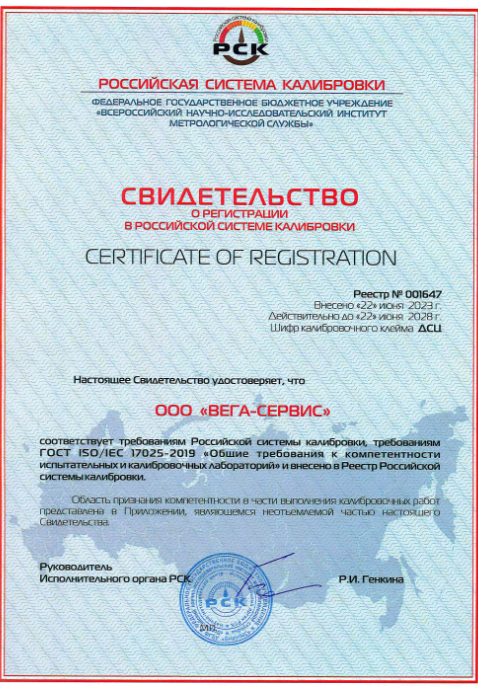

Технический центр ВЕГА.
Крупнейший поставщик основных услуг для грузоперевозчиков в Пермь.
Мы осуществляем:
- Установку и ремонт тахографов,
- Изготовление карт водителей,
- Поверки и калибровки автоцистерн,
- Государственный технический осмотр всех категорий т/с.
- Переоборудование т/с,
- Мониторинг транспорта,
- Контроль топлива,
- Подготовка автомобилей к перевозке опасных грузов.
Всё это мы.
Единственная компания в Перми, где все вопросы по транспорту решаются в одном месте.


Компания ООО «Вега Сервис» аккредитована в РСК и ФСА, благодаря чему имеет возможность проведения официальной поверки с занесением в госреестр.